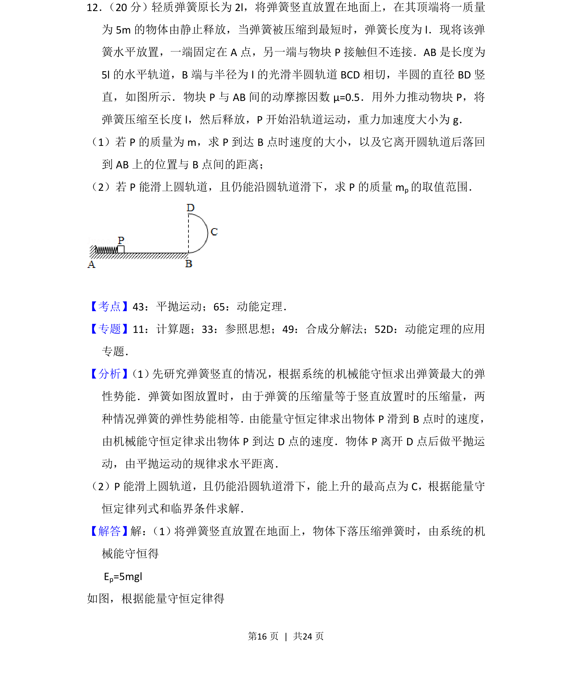
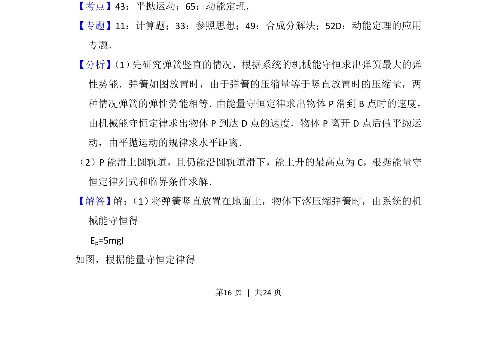
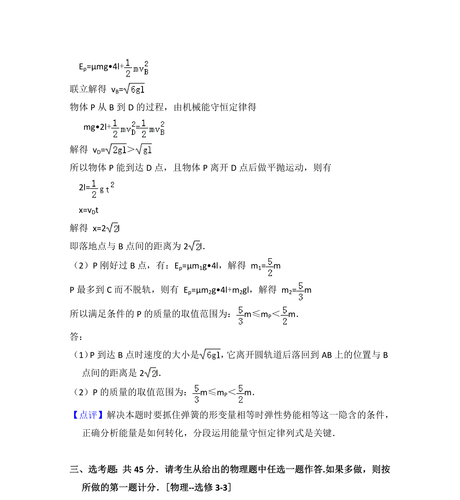

考点：平抛运动 动能定理 机械能守恒定律 圆周运动临界条件

该题考查弹簧弹性势能与圆周运动、平抛运动结合的综合问题，涉及临界条件分析。


📄 原 PDF 第 16 页：
素材/真题/吉林/2008-2024·（吉林）物理高考真题/2016年高考物理试卷（新课标Ⅱ）（解析卷）.pdf
12． （20分）轻质弹簧原长为2l，将弹簧竖直放置在地面上，在其顶端将一质量 为5m的物体由静止释放，当弹簧被压缩到最短时，弹簧长度为l．现将该弹 簧水平放置，一端固定在A点，另一端与物块P接触但不连接．AB是长度为 5l的水平轨道，B端与半径为l的光滑半圆轨道BCD相切，半圆的直径BD竖 直，如图所示．物块P与AB间的动摩擦因数μ=0.5．用外力推动物块P，将 弹簧压缩至长度l，然后释放，P开始沿轨道运动，重力加速度大小为g． （1）若P的质量为m，求P到达B点时速度的大小，以及它离开圆轨道后落回 到AB上的位置与B点间的距离； （2）若P能滑上圆轨道，且仍能沿圆轨道滑下，求P的质量m p的取值范围．
【考点】43：平抛运动；65：动能定理．菁优网版权所有 【专题】11：计算题；33：参照思想；49：合成分解法；52D：动能定理的应用 专题． 【分析】 （1） 先研究弹簧竖直的情况，根据系统的机械能守恒求出弹簧最大的弹 性势能．弹簧如图放置时，由于弹簧的压缩量等于竖直放置时的压缩量，两 种情况弹簧的弹性势能相等． 由能量守恒定律求出物体P滑到B点时的速度， 由机械能守恒定律求出物体P到达D点的速度．物体P离开D点后做平抛运 动，由平抛运动的规律求水平距离． （2）P能滑上圆轨道，且仍能沿圆轨道滑下，能上升的最高点为C，根据能量守 恒定律列式和临界条件求解． 【解答】解： （1）将弹簧竖直放置在地面上，物体下落压缩弹簧时，由系统的机 械能守恒得 E p=5mgl 如图，根据能量守恒定律得